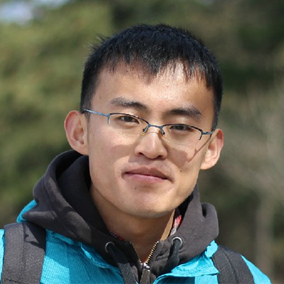
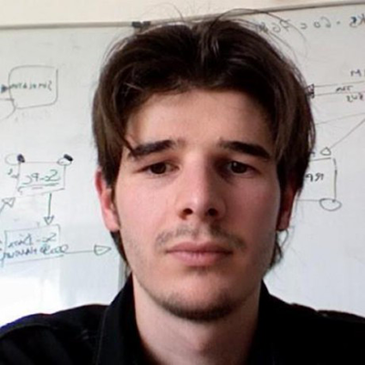
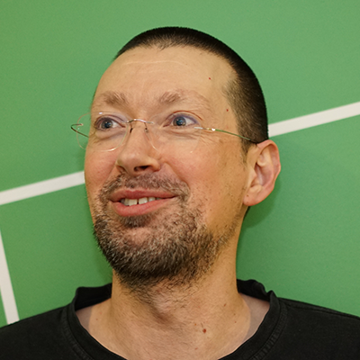

#hbasecon
About ◆◆◆
HBaseCon (founded in 2012) is the premier conference for the Apache HBase community—including committers/contributors, developers, operators, learners, and users (including some of those managing the largest deployments in the world). If you run Apache HBase in production or aspire to do so, HBaseCon has no substitute!
Apache HBase is a native distributed data store for the Apache Hadoop ecosystem. Its community works independently within the ASF to provide HBase software under the permissive Apache license.
HBASECON 2016
San Francisco | May 24, 2016
The Village
969 Market St.
San Francisco, CA 94103
http://www.969market.com
Attendees have exclusive access to a 15% discount on 3-day developer training for HBase, May 25-27 in San Francisco!
Note also: Attendees are invited to attend an HBase meetup on HBaseCon eve (May 23) hosted by Splice Machine, and "PhoenixCon" on May 25, hosted by Salesforce.
Program Committee
All paper proposals are evaluated and selected by a diverse cross-section of the HBase community (thanks, PC!):
Sean Busbey, Software Engineer, Cloudera / Apache HBase PMC
Elliott Clark, Engineer, Facebook / Apache HBase PMC
Lars Hofhansl, Architect, Salesforce.com / Apache HBase PMC
Matthew Hunt, Head of Open Source R&D, Bloomberg LP / Apache HBase Contributor
Francis Liu, Software Engineer, Yahoo! / Apache HBase Contributor
Carter Page, Senior Engineering Manager, Google Bigtable Team
Andrew Purtell, Architect, Salesforce.com / Apache HBase PMC Chair
Enis Söztutar, Member of Technical Staff, Hortonworks / Apache HBase PMC
Michael Stack, Software Engineer, Cloudera / Apache HBase PMC
AGENDA ◆◆◆
| Time | Development & Internals | Operations | Applications |
|---|---|---|---|
| 7:30am-6:30pm | Registration Open | ||
| 7:30am-8:30pm | Exhibits Open | ||
| 7:30am-8:50am | Breakfast | ||
| 8:00am-8:50am | Pre-conference Session: Apache HBase - Just the Basics
|
||
| 9am-10:40am | Opening General Session | ||
Keynote: Welcome Message/State of Apache HBase
|
|||
Keynote: The Road to Apache HBase
|
|||
Keynote: Apache HBase at Yahoo! Scale
|
|||
Keynote: Facebook's Return to (Real) Open Source
|
|||
| 10:40am-11am | Break | ||
| 11am-11:40am | Apache HBase Improvements and Practices at Xiaomi
|
Argus Production Monitoring at Salesforce
|
The Inevitability of Bigtable
|
| 11:50am-12:30pm | Apache HBase, Accelerated: In-Memory Flush and Compaction
|
Apache HBase Replication at Scale
|
Apache HBase in the Enterprise Data Hub at Cerner
|
| 12:30pm-1:30pm | Lunch | ||
| 1:30pm-2:10pm | Tales from Taming the Long Tail
|
Update on OpenTSDB and AsyncHBase
|
Apache HBase at Airbnb
|
| 2:20pm-3pm | Improvements to Apache HBase and Its Applications in Alibaba Search
|
Apache HBase Security at Scale
|
Rolling Out Apache HBase for Mobile Offerings at Visa
|
| 3:10pm-3:50pm | Off-heaping the Apache HBase Read Path
|
Containerizing Apache HBase Clusters
|
Time-Series Apache HBase (20 mins.) / Date-tiered Compaction Policy for Time-series Data (20 mins.)
|
| 3:50pm-4:10pm | Break | ||
| 4:10pm-4:50pm | Optimizing Apache HBase for Cloud Storage in Microsoft Azure HDInsight
|
Solving Multi-tenancy and G1GC in Apache HBase
|
Apache Kylin’s Performance Boost from Apache HBase (20 mins.) / In Search of Database Nirvana: Challenges of Delivering HTAP (20 mins.)
|
| 5pm-5:40pm | Apache Spark on Apache HBase: Current and Future
|
BigBucket Cache, Texas Edition (20 mins.) / Breaking the Sound Barrier with Persistent Memory (20 mins.)
|
Apache Phoenix: Use Cases and New Features
|
| 5:50pm-6:30pm | Closing General Session | ||
Keynote: The Future of Apache HBase (Panel)
|
|||
| 6:30pm-8:30pm | HBaseCon Party! | ||
SPEAKERS ◆◆◆
-
Anastasia Braginsky
Yahoo!
Anastasia is a Research Scientist at Yahoo!. She works on scalable big data and search platforms. Most recently, she focused on HBase scalability features. She received her PhD in distributed computing from Technion CS in 2015. Prior to Yahoo, she held technical positions at IBM and Intel.
-
Andrew Purtell
Salesforce
Andrew is the VP/PMC Chair of Apache HBase, and an Architect at Salesforce.com working on cloud storage. Previously, Andrew worked at Intel, Trend Micro, Sparta, and McAfee.
-
Anoop Sam John
Intel
Anoop is part of Intel’s Big Data platform team, and is an Apache HBase committer and PMC member.
-
Ashu Pachauri
Facebook
Ashu Pachauri is a software engineer at Facebook.
-
Bhinav Sura
Salesforce
Bhinav completed his Master's degree in CS from University of Illinois a couple of years ago and now works at Salesforce as a developer on Argus, where he spends most of his time implementing platform services that can scale to handle at least 1 billion events per minute.
-
Carter Page
Google
Carter is an Engineer and Manager on the Bigtable development team at Google in New York City. For the last 19 years, Carter has worked on high-performance distributed software across several industries, including media, finance, and education.
-
Cesar Delgado
Apple
Cesar is a platform architect at Apple working on Siri. He has also worked on iTunes, iCloud, News and Maps. Has been involved in the Apache Hadoop community since 2008.
-
Chris Larsen
Yahoo!
Chris is a Software Engineer at Yahoo! working on the monitoring team to store and process time-series data at a massive scale. He coordinates development on OpenTSDB and AsyncHBase with a great community of users and contributors. Previously, he helped publish OpenTSDB 2.0 while working at Limelight Networks.
-
Clara Xiong
Flurry/Yahoo!
Clara is a Senior Software Engineer on Flurry's Platform Team, which builds platform services for mobile data analytics applications, primarily working on Apache HBase and data processing/streaming pipelines. Previously she worked at Microsoft in various areas, including cloud storage and SQL Server scalability.
-
CW Chung
Visa
CW has been using and building Apache Hadoop to solve Big Data problems since 2008. He worked in the Hadoop Engineering Team at Yahoo! before joining Visa. As one of the earliest Hadoop engineers at Visa, he has built Hadoop-based platform and apps there and promotes Hadoop culture and technology internally. CW got his Master of Engineering from Cornell University, and MBA from Haas School of Business at UC Berkeley.
-

Daniel Pol
Hewlett-Packard Enterprise
Daniel Pol works on Apache HBase performance in the Big Data R&D team at Hewlett-Packard Enterprise.
-

David Pope
Facebook
David is a Production Engineer at Facebook on the Apache HBase team.
-
Duo Zhang
Xiaomi
Duo is an Apache HBase Committer, and a Software Engineer at Xiaomi working on storage systems like HBase and HDFS.
-
Elliott Clark
Facebook
Elliott is an Engineer at Facebook on the Apache HBase team. He's also an HBase committer and PMC member.
-
Enis Söztutar
Hortonworks
Enis is a Member of the Technical Staff at Hortonworks, a committer and PMC member on Apache HBase, and a member of the ASF. He has been using and developing Apache Hadoop ecosystem projects since 2007.
-
Eshcar Hillel
Yahoo!
Eshcar is a Research Scientist at Yahoo! working on scalable big data and search platforms with a focus on HBase scalability. Prior to Yahoo!, she held a technical position at HP Labs. She received her PhD in distributed computing from Technion CS in 2011.
-
Francis Liu
Yahoo!
Francis is a Software Engineer at Yahoo!, working mainly on Apache HBase. He is also an Apache Hive contributor. Prior to that, he was involved in the development of a workflow management and incremental processing platform built on top of Apache Hadoop.
-
Gary Helmling
Facebook
Gary Helmling is a Software Engineer at Facebook, and an Apache HBase committer and PMC member.
-
Graham Baecher
HubSpot
Graham is a member of the Data Infrastructure team at HubSpot, helping build, scale and tune backend systems and datastores. His recent work there includes G1GC analysis and tuning for HubSpot's several Apache HBase clusters.
-
Hongbin Ma
Kyligence
Hongbin is a technical partner at a startup called Kyligence that focuses on open source big data solutions. After receiving his master’s degree at Shanghai Jiaotong University in April 2014, he worked at Microsoft Research Asia on a graph database called Trinity. During his first job at eBay, he became the No.1 committer to Apache Kylin on Github. His focus on Kylin includes storage engine, query optimization, test coverage, connectivity, etc.
-
Ishan Chhabra
Rocket Fuel
Ishan is a Technical Lead at Rocket Fuel, with a focus on building the next generation of real time storage and processing systems to enable key business use cases. Prior to Rocket Fuel, he worked at Bell Labs to enable privacy in large scale recommendation systems using a truly distributed middleware. Ishan holds a Bachelors in Computer Science and Engineering.
-
James Taylor
Salesforce
James is an architect at Salesforce in the Data Platform and Services Cloud. He leads the Apache Phoenix project, an OLTP and operational analytics database on top of HBase, and is a PMC member of Apache Calcite and the Apache Incubator. Prior to working at Salesforce, James worked at BEA Systems on projects such as federated query processing systems and event driven programming platforms and has worked at various other start-ups in the computer industry over the past 20 years.
-
Jason Zhang
Airbnb
Jason is a Software Engineer on the Data Infrastructure team at Airbnb. Before Airbnb, he worked in the Distributed Data System group at Linkedin. Jason has been an Apache Helix PMC member since 2012.
-
Javier Maestro
Facebook
Javier is a Production Engineer at Facebook on the Apache HBase team.
-
Jean-Marc Spaggiari
Cloudera
Jean-Marc is a Senior Solution Architect at Cloudera with many years of experience, specializing in Apache HBase solutions. An active HBase contributor, Jean-Marc has contributed more than 50 patches to the community and participates in all release testing.
-
Jesse Anderson
Smoking Hand
Jesse is a Data Engineer, Creative Engineer, and CEO of Smoking Hand. He trains at companies ranging from startups to Fortune 100 companies on cutting edge technology like Apache Kafka, Apache Hadoop, and Apache Spark. He has taught thousands of students the skills to become Data Engineers. He has been covered in prestigious publications such as The Wall Street Journal, CNN, BBC, NPR, Engadget, and Wired.
-

Jingwei Lu
Airbnb
Jingwei is on the Data Infrastructure team at Airbnb. He was previously a tech-leader in Facebook data infrastructure team in charge of Bumblebee project (hive/hadoop replacement) query processing and language. Prior to Facebook, he redesigned the SCOPE (Microsoft equivalent of Hive) runtime at Microsoft.
-
John Leach
Splice Machine
With over 15 years of software experience under his belt, John’s expertise in analytics and BI drives his role as CTO. Prior to Splice Machine, John founded Incite Retail and led the company’s strategy and development efforts. Prior to Incite Retail, he ran the business intelligence practice at Blue Martini Software and built strategic partnerships with integration partners.
-
Lars Hofhansl
Salesforce
Lars is an Apache HBase committer and PMC member. He is an Architect at Salesforce.com, where he leads HBase development efforts, recently focusing on performance, backup, and disaster recovery. In the past, Lars held engineering roles at Peoplesoft and Digital Equipment Corp.
-

Liangliang He
Xiaomi
He is a Software Engineer on Xiaomi's storage infrastructure team. He focuses on development and support of Apache HBase and the cloud storage services that are backing various Xiaomi large-scale online services.
-
Liqi Yi
Intel
Liqi is a Senior Java Performance Engineer in Intel’s Software Solution Group. He has extensive experience with Apache HBase performance optimization, Java Garbage Collection tuning, and hardware platform characterization.
-
Liyin Tang
Airbnb
Liyin is a Software Engineer on the Data Infrastructure team at Airbnb, and an Apache HBase committer and PMC member. Before Airbnb, he worked at Facebook and Dropbox. He currently focuses on building highly available and reliable storage services that can scale in the face of exponential data growth. He holds a master's degree in computer science from USC.
-
Luke Han
Kyligence
Luke is Co-Founder and CEO at Kyligence, and the co-creator and VP of Apache Kylin. Prior to Kyligence, he was Big Data Product Lead at eBay managing Kylin, engaging customers, and coordinating various teams from different geographies. Prior to eBay, Luke was chief consultant at Actuate China.
-
Maryann Xue
Intel
Maryann is a Software Engineer in the Big Data Technologies team at Intel. She is a PMC member of the Apache Phoenix project and a committer on the Apache Calcite project. Before shifting focus on open source projects, she worked on Intel's Distribution of Hadoop as a technical leader of the HBase team.
-

Matt Mullins
Facebook
Matt Mullins is a Production Engineer for the HBase team at Facebook.
-

Matteo Bertozzi
Cloudera
Matteo is a Software Engineer at Cloudera, and an HBase committer/PMC member.
-
Maxim Lukiyanov
Microsoft
Maxim is Program Manager on the HDInsight team at Microsoft. He is responsible for the HBase cluster type, focusing primarily on optimizing HBase for cloud environment.
-

Michael O'Reilly
Google
Michael spent 20 years in the ISP industry in various forms. Eight years ago, he escaped to Google SRE and has immensely enjoyed making full use of the SI prefixes he used to make jokes about in school. He is the Director of Google SRE in Sydney, aka "The Czar of Crazy".
-
Michael Stack
Cloudera
Michael is a Software Engineer at Cloudera. He is a PMC member on the HBase, Hadoop, and Arrow projects.
-
Nitin Verma
Microsoft
Nitin is a Senior Software Engineer in the HDInsight group at Microsoft. He worked as a database kernel and storage developer for nearly 12 years on Microsoft SQL Server and Sybase ASE.
-
Partha Saha
Visa
Partha Saha received a Ph.D. in Physics from MIT in 1997, where he built a laser interferometer to study gravitational waves, and since then has held technical positions at Amazon Web Services, Yahoo!, and Microsoft. At Visa, he is involved in the redesign of the data platform behind data products.
-
Patrick Dignan
HubSpot
Patrick is a member of the Data Infrastructure team at HubSpot, helping build, scale and tune backend systems and datastores. His recent work there focuses on Apache HBase multi-tenancy reliability and performance.
-

Pravin Mittal
Microsoft
Pravin is a Principal Development Manager in the HDInsight group at Microsoft.
-

Ramakrishna Vasudevan
Intel
Ramakrishnan is part of Intel’s Big Data platform team, and is an Apache HBase committer and PMC member.
-
Rohit Jain
Esgyn
Rohit is the CTO at Esgyn working on Apache Trafodion, currently in incubation. Trafodion is a transactional SQL-on-HBase RDBMS. Rohit worked for Tandem, Compaq, and Hewlett-Packard for the last 28 of his 39 years in application and database development. His experience spans OLTP and analytic processing on distributed, massively parallel systems.
-
Shaoxuan Wang
Alibaba
Shaoxuan is a Senior Manager in Alibaba's Search Infrastructure division. Prior to Alibaba, he was a senior software engineer working on social graph and core infrastructure at Facebook.
-
Shylaja Kokoori
Intel
Shylaja is a Software Engineer in the Software and Services Group at Intel. She has 10+ years of experience working in areas like Java Virtual Machine, driver development, content security, and tools and automation. Her recent work focuses on non-volatile memory programming and enabling for Big Data frameworks. She holds a Master’s degree in Bioinformatics and one in Computing Studies from Arizona State University.
-
Swarnim Kulkarni
Cerner
Swarnim is a Lead Architect with the Big Data team at Cerner Corp.. At Cerner, his team is focused on designing and development of infrastructure for ingestion of healthcare data in the cloud using Apache Hadoop technologies. He is also a contributor to the Apache Hive project with a focus on the Hive/HBase integration of the project.
-
Ted Malaska
Cloudera
Ted is a Solutions Architect at Cloudera, a contributor to Apache Spark and Apache HBase, and a co-author of the O’Reilly book, Hadoop Applications Architecture.
-
Tom Valine
Salesforce
Tom is a Silicon Valley veteran with a passion for producing technology that has a real impact on both business and individuals. Having had the good fortune to work at some of the most recognizable names in the industry, including IBM, NVIDIA, Transmeta, Sun Microsystems, and Atmel, Tom currently is Director of Infrastructure Engineering for the Diagnostics, Visibility and Analytics group at Salesforce.
-
Venkata Deepankar Reddy
Rocket Fuel
Venkata Deepankar is a Software Engineer at Rocket Fuel where he builds large-scale data and serving applications. Prior to Rocket Fuel, he interned at Google at INRIA. Venkata Deepankar holds a Bachelors in Computer Science from IIT Bombay with a specialization in statistics.
-
Vladimir Rodionov
Hortonworks
Vladimir is a Senior Member of Technical Staff at Hortonworks, and an Apache HBase contributor. He holds a master’s degree in Applied Math and Physics from the Moscow Institute of Physics and Technology.
-
Yu Li
Alibaba
Yu is a Technical Expert in Alibaba’s search department, with more than 5 years of experience in distributed storage and systems. He is an active contributor to Apache HBase.
-
Zhan Zhang
Hortonworks
Zhan is a Member of Technical Staff at Hortonworks, where he works on Apache Hadoop ecosystem and Apache Spark. He received his BS/MS degree from Fudan University of China and Ph.D in Computer & Information Science & Engineering from University of Florida. His research interests distributed system and large-scale machine learning platform, with more than 10 papers published in top journals/conferences.
SPONSORS ◆◆◆
Archives ◆◆◆
Conduct ◆◆◆
HBaseCon is dedicated to providing a harassment-free conference experience for everyone, regardless of gender, gender identity and expression, sexual orientation, disability, physical appearance, body size, race, or religion. We do not tolerate harassment of conference participants in any form. Conference participants violating these rules may be sanctioned or expelled from the conference without a refund at the discretion of the conference organizers.
Harassment includes offensive verbal comments related to gender, gender identity and expression, sexual orientation, disability, physical appearance, body size, race, religion, sexual images in public spaces, deliberate intimidation, stalking, following, harassing photography or recording, sustained disruption of talks or other events, inappropriate physical contact, and unwelcome sexual attention. Participants asked to stop any harassing behavior are expected to comply immediately.
If a participant engages in harassing behavior, the conference organizers may take any action they deem appropriate, including warning the offender or expulsion from the conference with no refund. If you are being harassed, notice that someone else is being harassed, or have any other concerns, please contact a member of conference staff immediately. Conference staff can be identified by special badges.
Conference staff will be happy to help participants contact hotel/venue security or local law enforcement, provide escorts, or otherwise assist those experiencing harassment to feel safe for the duration of the conference. We value your attendance.
We expect participants to follow these rules at all conference venues and conference-related social events.